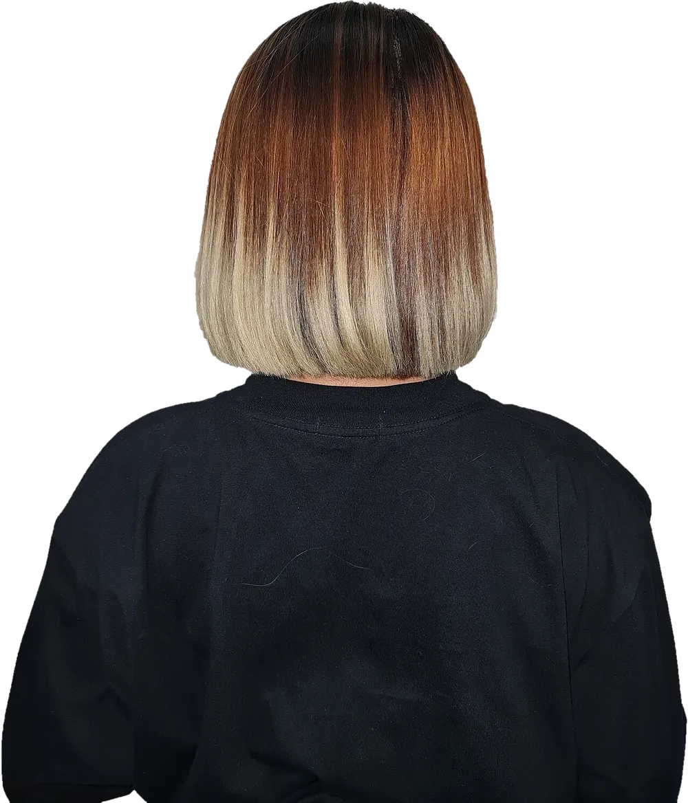
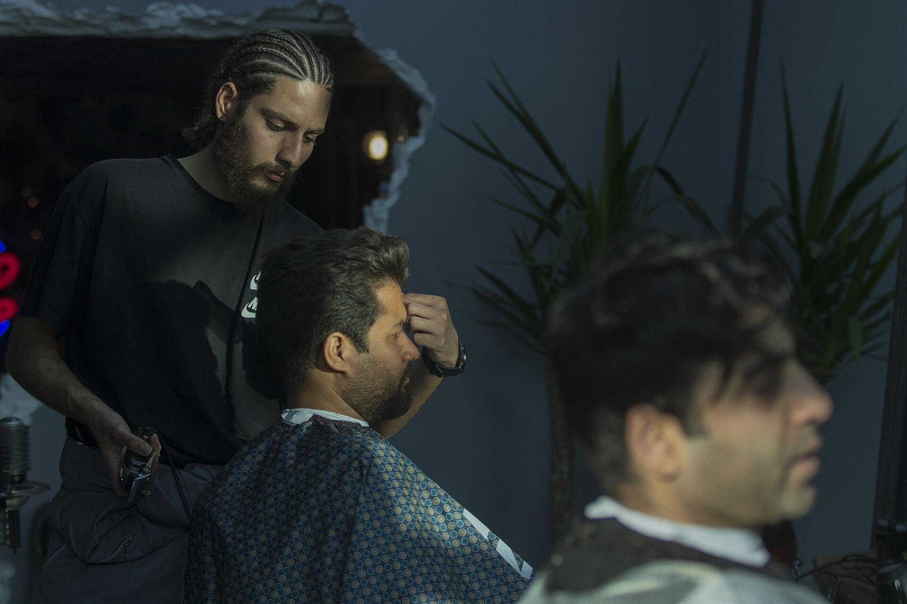
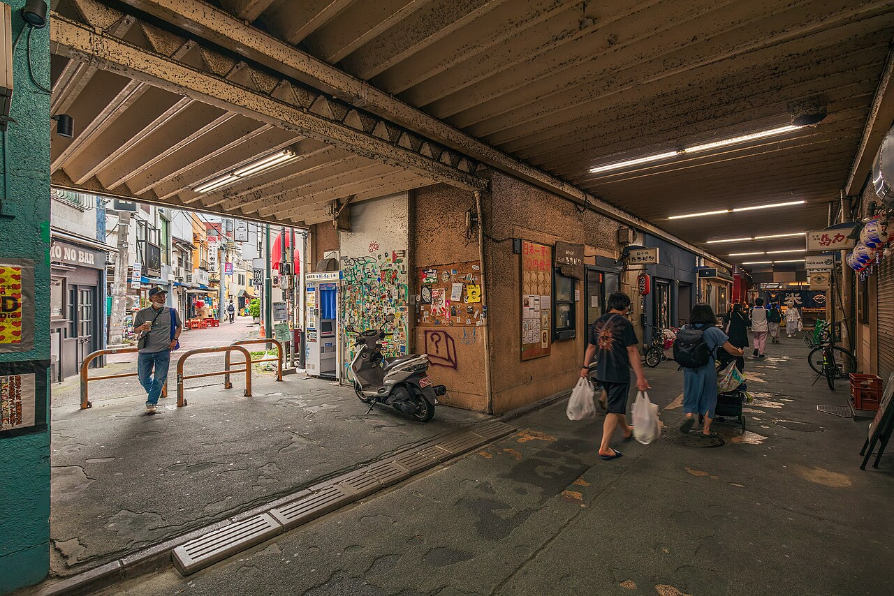

森下 七海
店主。ボブ・ショート・前髪
美容師になって14年 月曜休み

北口から徒歩7分
写真：後ろから見たボブ。
この店のお客さんではありません
Alex Neman／Wikimedia Commons
CC BY-SA 4.0

写真：イランの理容室で髪を整えてもらう人。この店の3人ではありません
Mostafa Meraji／Wikimedia Commons／CC0
鏡は3枚だけです。日にちとメニューを選ぶと、3人それぞれの鏡に、その日に始められる時刻が出ます。指名をしない場合は、空いている人が担当します。
店主。ボブ・ショート・前髪
美容師になって14年 月曜休み
ハイライト・ブリーチ・白髪ぼかし
美容師になって9年 木曜休み
パーマ・縮毛矯正・メンズ
美容師になって6年 金曜休み
時刻を選んでください
作例のため、予約はここで止まります（店は架空です）。
このページか、お電話（000-0000-0000、10時〜19時）で。空いていれば予約なしでも切ります。
前の日の19時まではこのページから、料金はかかりません。当日はお電話でお知らせください。
最初の15分で、写真を見ながら長さと色を相談します。この時間はメニューの時間に入っています。

写真：東京の高架下の路地を歩く人たち。楡ノ木の路地ではありません
Ximonic (Simo Räsänen)／Wikimedia Commons／CC BY-SA 4.0